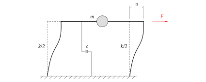
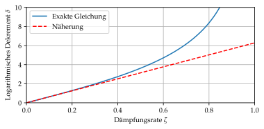

%run style_and_packages.ipynb4 Beispiel: Logarithmisches Dekrement
4.1 Aufgabenstellung
Das in Abbildung 4.1 dargestellte System zeigt ein Rahmentragwerk. Dieses kann als Einmassenschwinger modelliert werden, welcher eine gedämpfte freie Schwingung erfährt.

Um die Systemeigenschaften des Rahmens zu untersuchen, wird eine Kopfverschiebung bzw. Auslenkung des Rahmens von \(u_0 = 20\text{ mm}\) aufgebracht. Danach wird die Halterung schlagartig gelöst und der Rahmen kann frei schwingen. Die angebrachte Messeinrichtung registriert eine max. Kopfverschiebung nach dem ersten Zurückschwingen von \(u_1 = 15\text{ mm}\) nach \(T_D = 0.2 \text{s}\).
Gesucht:
- Laterale bzw. horizontale Steifigkeit \(k\) des Rahmens
- Die Dämpfungsrate \(\zeta\) und die Dämpfungskonstante \(c\)
- Die Amplitude der Auslenkung des Rahmens nach 10 Schwingzyklen
Gegeben:
EA_riegel, EI_riegel,EA_stuetze, EI_stuetze, k, m, u, c, T_D, zeta, H, u_0, u_1 = sp.symbols('EA_riegel, EI_riegel,EA_stuetze, EI_stuetze, k, m, u, c,T_D, zeta H u_0 u_1')params = {EA_riegel:sp.oo,
EI_riegel:sp.oo,
EA_stuetze:sp.oo,
m:1941*unit.N*unit.second**2/unit.m,
u_0:20*unit.mm,
u_1:15*unit.mm,
T_D:0.2*unit.second}
render.dict_to_table(params)| \(EA_{riegel} = \infty\) | \(EA_{stuetze} = \infty\) |
| \(EI_{riegel} = \infty\) | \(T_{D} = 0.2 \text{s}\) |
| \(m = \frac{1941 \text{N} \text{s}^{2}}{\text{m}}\) | \(u_{0} = 20 \text{mm}\) |
| \(u_{1} = 15 \text{mm}\) |
4.2 Musterlösung
4.2.1 Horizontale Steifigkeit
4.2.1.1 Logarithmisches Dekrement
Da keine Angaben über die Profile der Stützen gemacht werden, kann mittels des logarithmischen Dekrements die Eigenkreisfrequenz bestimmt werden. Anhand der Eigenkreisfrequenz lässt sich die Steifigkeit ableiten.
def plot_log_dek():
parameter_1 = {'omega_n':10,
'zeta':0.05,
'u0':20,
'v0':1}
##Lösung der Gesamtantwort
t, zeta, omega_n, u0, v0, A1, A2 = sp.symbols('t zeta, omega_n, u0, v0, A1, A2')
x = sp.Function('x')(t)
randbedingungen = {sp.diff(x,t).subs(t,0):v0,
x.subs(t,0):u0}
DGL_gedaempft = sp.diff(x,t,2) + 2 *zeta*omega_n*sp.diff(x,t)+omega_n**2*x
x_solution = sp.dsolve(DGL_gedaempft, x, ics=randbedingungen)
gesamtantwort = sp.lambdify(t,x_solution.subs(parameter_1).rhs,'numpy')
t_array = np.linspace(0,10,1000)
## Plots
fig = plt.figure(figsize=(5.9, 2.5))
plt.plot(t_array, gesamtantwort(t_array), label='Gesamtantwort')
plt.grid()
plt.xlabel('Zeit [s]')
plt.ylabel('Verschiebung')
plt.xlim(0,10)
# plt.yticks(y_range)
# plt.xticks(y_range)
plt.legend(loc='upper right')
# MASSLINIE
start = 1.2
end = 1.95
ht = 15
plt.annotate("", xy=(start, ht), xytext=(end, ht), arrowprops=dict(arrowstyle='<->'))
plt.annotate("", xy=(start, ht), xytext=(end, ht), arrowprops=dict(arrowstyle='|-|'))
bbox=dict(fc="white", ec="none")
plt.text((start +end)/2, ht+3, "$T_d$", ha="center", va="center", bbox=bbox)
# Punktbeschriftung
plt.annotate('$u_0$',xy=(start, 11), xytext=(start+0.2, 11-2), color='red')
plt.annotate('$u_1$',xy=(end, 11), xytext=(end+0.1, 11-4), color='blue')
plt.show()
plot_log_dek()C:\Users\Pascal Gitz\miniconda3\envs\calcs\lib\site-packages\matplotlib\cbook\__init__.py:1340: ComplexWarning: Casting complex values to real discards the imaginary part
return np.asarray(x, float)
delta = sp.ln(u_0 / u_1)
zeta = delta/ (2*sp.pi)
render.eq_display('delta', delta,
'delta', delta.subs(params).evalf(3))\[\begin{equation}\delta = \log{\left(\frac{u_{0}}{u_{1}} \right)}\end{equation}\]
\[\begin{equation}\delta = 0.288\end{equation}\]
4.2.1.2 Dämpfungsrate
Anhand des logarithmischen Dekrements kann die Dämpfungsrate bestimmt werden.
def plot_daempfungsrate():
uN, N , T_d, zeta= sp.symbols('uN N T_d zeta')
naherung_dekrement = 2*sp.pi * zeta
dekrement_genau = 2*sp.pi*zeta / (sp.sqrt(1-zeta**2))
dekrement_genau_lamb = sp.lambdify(zeta, dekrement_genau)
naherung_dekrement_lamb = sp.lambdify(zeta, naherung_dekrement)
zeta_array = np.linspace(0,1,1000)
fig = plt.figure(figsize=(5.9, 2.5))
plt.plot(zeta_array, dekrement_genau_lamb(zeta_array), label='Exakte Gleichung')
plt.plot(zeta_array, naherung_dekrement_lamb(zeta_array), color='red',label='Näherung', linestyle='dashed')
plt.grid()
plt.xlabel('Dämpfungsrate $\zeta$')
plt.ylabel('Logarithmisches Dekrement $\delta$')
plt.xlim(0,1)
plt.ylim(0,10)
# plt.yticks(y_range)
# plt.xticks(y_range)
plt.legend(loc='upper left')
plt.show()
plot_daempfungsrate()<lambdifygenerated-2>:2: RuntimeWarning: divide by zero encountered in divide
return 2*pi*zeta/sqrt(1 - zeta**2)
Für kleine Dämpfungsraten kann folgende Gleichung verwendet werden:
\[ \zeta \simeq \frac{\delta}{2\pi} \tag{4.1}\]
Die exakte Lösung bestimmt sich folgender massen:
zeta = delta / (sp.sqrt(4*sp.pi**2 + delta**2))
render.eq_display('zeta_', 'delta/(sqrt(4*pi**2+delta**2))',
'zeta_', zeta,
'zeta_', zeta.subs(params).evalf(3))\[\begin{equation}\zeta_{} = \frac{\delta}{\sqrt{\delta^{2} + 4 \pi^{2}}}\end{equation}\]
\[\begin{equation}\zeta_{} = \frac{\log{\left(\frac{u_{0}}{u_{1}} \right)}}{\sqrt{\log{\left(\frac{u_{0}}{u_{1}} \right)}^{2} + 4 \pi^{2}}}\end{equation}\]
\[\begin{equation}\zeta_{} = 0.0457\end{equation}\]
4.2.1.3 Eigenkreisfrequenz
Aus der Aufgabenstellung ist die gedämpfte Periode von \(T_D = 0.2 s\) bekannt. Anhand dieser lässt sich die gedämpfte Eigenkreisfrequenz \(\omega_D\) bestimmen und unter Berücksichtigung der Dämpfungsrate \(\zeta\) kann die Eigenkreisfrequenz \(\omega_n\) bestimmt werden.
omega_D = (2*sp.pi)/ T_D
omega_n = omega_D / (sp.sqrt(1-zeta**2))
render.eq_display('omega_D', omega_D,
'omega_D', omega_D.subs(params).evalf(4),
'omega_n', "omega_D / (sqrt(1-zeta_**2))",
'omega_n', omega_n.subs(params).evalf(4))\[\begin{equation}\omega_{D} = \frac{2 \pi}{T_{D}}\end{equation}\]
\[\begin{equation}\omega_{D} = \frac{31.42}{\text{s}}\end{equation}\]
\[\begin{equation}\omega_{n} = \frac{\omega_{D}}{\sqrt{1 - \zeta_{}^{2}}}\end{equation}\]
\[\begin{equation}\omega_{n} = \frac{31.45}{\text{s}}\end{equation}\]
4.2.1.4 Steifigkeit
Wir kennen die Beziehung zwischen Eigenkreisfrequenz und Steifigkeit:
\[ \omega_n = \sqrt{\frac{k}{m}} \tag{4.2}\]
k = m*omega_n**2
render.eq_display('k','m*omega_n**2',
'k',k.subs(params).evalf(3))\[\begin{equation}k = m \omega_{n}^{2}\end{equation}\]
\[\begin{equation}k = \frac{1.92 \cdot 10^{6} \text{N}}{\text{m}}\end{equation}\]
4.2.2 Dämpfungskonstante
Anhand der Dämpfungsrate \(\zeta\) lässt sich leicht die Dämpfungskonstante bestimmen:
\[ \zeta = \frac{c}{2\omega_nm} \tag{4.3}\]
c = zeta * 2*omega_n*m
render.eq_display('c',c.subs(params).evalf(3))\[\begin{equation}c = \frac{5.58 \cdot 10^{3} \text{N} \text{s}}{\text{m}}\end{equation}\]
4.2.3 Amplitude nach 10 Schwingzyklen
Das Verhalten der Amplitude ist in Abbildung 4.2 dargestellt.
\[ \delta = \ln({\frac{u_0}{u_1}}) \tag{4.4}\]
\(\delta\) ist ein konstanter Wert und kann auf 10 Zyklen erweitert werden.
eq = sp.Eq(sp.Symbol('delta'), sp.ln(u_0/u_1))
u_10 = u_0 * sp.exp(-10*delta)
render.eq_display('u_1', sp.solve(eq, u_1)[0],
'u_10', 'u_0*exp(-10*delta)',
'u_10', u_10.subs(params).evalf(4))\[\begin{equation}u_{1} = u_{0} e^{- \delta}\end{equation}\]
\[\begin{equation}u_{10} = u_{0} e^{- 10 \delta}\end{equation}\]
\[\begin{equation}u_{10} = 1.126 \text{mm}\end{equation}\]